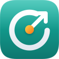

10 propostas no estilo de ícone Apple: forma squircle, degradê, brilho superior e sombra suave.
01 Colunas e check02 Gantt em escada

03 Ciclo e avanço04 P de caminho05 Quadrantes e centelha06 Checklist inteligente07 Camadas do projeto08 Marco alcançado09 Medidor de progresso10 Equipe conectada
01 Colunas e check02 Gantt em escada03 Ciclo e avanço04 P de caminho05 Quadrantes e centelha06 Checklist inteligente07 Camadas do projeto08 Marco alcançado09 Medidor de progresso10 Equipe conectada